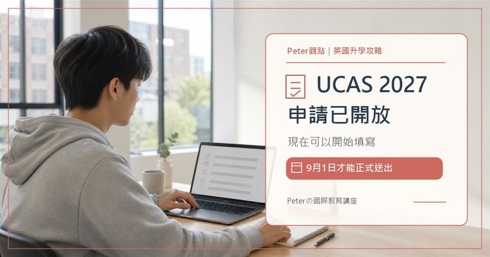

《看懂制度，選對世界》第一集
英國 UCAS 2027 申請已開放：現在能填，9 月 1 日才可送出
UCAS 2027入學申請已經開放。但請注意：「系統開放」不等於「現在就能正式送件」。對 而言，現在最重要的不是搶快按下送出，而是利用這段時間，完成科系定位、五個志願的組合，以及新版Personal Statemen…

【 2027申請已開放：現在能填，9月1日才可送出】 UCAS 2027入學申請已經開放。但請注意：「系統開放」不等於「現在就能正式送件」。對 而言，現在最重要的不是搶快按下送出，而是利用這段時間，完成科系定位、五個志願的組合，以及新版Personal Statement的證據整理。
一、 2026年5月12日：申請系統開放，可註冊並開始填寫 2026年9月1日：完整申請才可以正式提交 2026年10月15日英國時間18:00：牛津、劍橋，以及多數醫學、牙醫、獸醫與獸醫科學課程的同等審查期限 2027年1月13日英國時間18:00：多數其他本科課程的同等審查期限 「同等審查」代表在期限前送達的申請，校方必須給予公平考量；期限後部分課程仍可能收件，但大學沒有義務繼續審查，而且名額可能已經減少。
學生若透過學校或升學中心申請，還要注意校內期限通常會更早，因為學校需要時間檢查資料、填入預估成績並完成推薦信。二、 UCAS本科申請最多可填五個選擇，但這五個選擇不應只是五所名氣最大的學校。真正要比較的是： 課程內容與必修模組； 入學成績及英語要求； 是否需要面試、測驗或作品集； 地點、生活費與產業連結； 畢業後的職涯方向。同樣叫做商業管理、心理學或電腦科學，不同大學的課程可能分別偏向理論、研究、產業實務或數學分析。Peter觀點認為，英國申請的底層邏輯是「先選科系，再選大學」。
如果學生連自己要研究的知識領域都沒有想清楚，只用排名排列五個志願，Personal Statement通常也會失去焦點。三、 UCAS從2026入學起，將原本一篇長文改成三個問題，這個格式也適用於2027入學： 寫作重點也不是反覆宣稱「我很有熱情」，而是提供證據。例如： 經驗本身不必驚天動地，但反思必須具體。四、現在應該完成的不是送件，而是申請工程 學生現在可以做四件事： 家長則應同步核算： 學費與住宿生活費； 匯率變動的預備空間； 不同城市的生活成本； 學生選擇這個科系後的職涯方向。
UCAS提早開放的真正意義，不是鼓勵學生提早送件，而是給家庭更多時間，把科系、學校、文書、推薦信與預算放進同一個策略裡。申請速度不會取代申請品質。如果你正在準備2027英國大學申請，現在最需要解決的是選校、選科系，還是Personal Statement？歡迎留言，也請把這份時程先收藏起來。